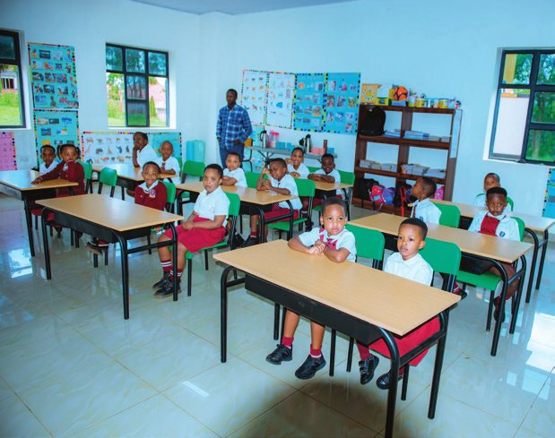
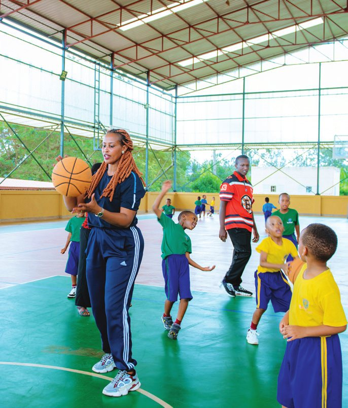
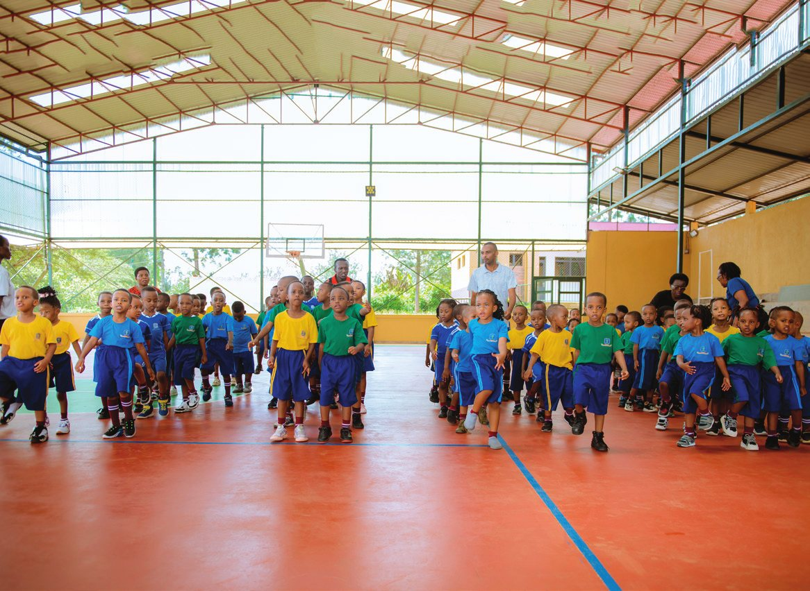

ProgrammesPrograms
CrècheDaycare (Crèche)
Accueil des enfants à partir de 7 mois et au-delà.Welcoming children from 7 months and above.

MaternelleKindergarten (Preschool)
Éveil, socialisation et apprentissage pré-scolaire.Early learning, socialization, and school readiness.
Langues d'enseignementLanguages of instruction
- 1 · FrançaisFrench
- 2 · Français + anglais (cours)French + English (subject)
- 3 · Français + anglais (cours)French + English (subject)
« Notre école de la petite enfance a pour base principale le français. L'anglais est introduit dès la deuxième maternelle comme cours. »“Our early childhood school is primarily based on French. English is introduced as a subject starting from the second year of kindergarten.”

PrimairePrimary School
Formation académique solide et adaptée au développement global de l'enfant.Solid academic foundation adapted to the child's holistic development.

Comparer nos sessionsCompare our sessions
| SessionSession | NiveauxLevels | ObjectifFocus | LangueLanguage |
|---|---|---|---|
| CrècheDaycare (Crèche) | 7 mois et au-delà7 months and above | Accueil des enfants à partir de 7 mois et au-delà.Welcoming children from 7 months and above. | Français : langue principale de l'écoleFrench: main language of the school |
| MaternelleKindergarten (Preschool) | M1 · M2 · M3N1 · N2 · N3 | Éveil, socialisation et apprentissage pré-scolaire.Early learning, socialization, and school readiness. | Français ; anglais comme cours dès la 2e annéeFrench; English as a subject from the 2nd year |
| PrimairePrimary School | P1 · P2 · P3P1 · P2 · P3 | Formation académique solide et adaptée au développement global de l'enfant.Solid academic foundation adapted to the child's holistic development. | Français : langue principale de l'écoleFrench: main language of the school |
Parcours d'apprentissageLearning journey
Sélectionnez une étape pour voir la langue d'enseignement.Select a stage to see the language of instruction.
CrècheDaycare
Accueil des enfants à partir de 7 mois et au-delà.Welcoming children from 7 months and above.
FR Français : langue principale de l'écoleFrench: main language of the school
EN Anglais : pas encore introduitEnglish: not yet introduced
M1N1
Éveil, socialisation et apprentissage pré-scolaire.Early learning, socialization, and school readiness.
FR Français : langue principale de l'écoleFrench: main language of the school
EN Anglais : pas encore introduitEnglish: not yet introduced
M2N2
Éveil, socialisation et apprentissage pré-scolaire.Early learning, socialization, and school readiness.
FR Français : langue principale de l'écoleFrench: main language of the school
EN Anglais : enseigné comme cours à partir de la deuxième maternelleEnglish: taught as a subject from the second year of kindergarten
M3N3
Éveil, socialisation et apprentissage pré-scolaire.Early learning, socialization, and school readiness.
FR Français : langue principale de l'écoleFrench: main language of the school
EN Anglais : enseigné comme cours à partir de la deuxième maternelleEnglish: taught as a subject from the second year of kindergarten
P1P1
Formation académique solide et adaptée au développement global de l'enfant.Solid academic foundation adapted to the child's holistic development.
FR Français : langue principale de l'écoleFrench: main language of the school
EN Anglais : enseigné comme cours à partir de la deuxième maternelleEnglish: taught as a subject from the second year of kindergarten
P2P2
Formation académique solide et adaptée au développement global de l'enfant.Solid academic foundation adapted to the child's holistic development.
FR Français : langue principale de l'écoleFrench: main language of the school
EN Anglais : enseigné comme cours à partir de la deuxième maternelleEnglish: taught as a subject from the second year of kindergarten
P3P3
Formation académique solide et adaptée au développement global de l'enfant.Solid academic foundation adapted to the child's holistic development.
FR Français : langue principale de l'écoleFrench: main language of the school
EN Anglais : enseigné comme cours à partir de la deuxième maternelleEnglish: taught as a subject from the second year of kindergarten
Développement des talentsTalent Development
SportsSports
Mise en valeur des talents, notamment en basket-ball.Nurturing talents, especially in basketball.
Colonies de vacancesHoliday Camps
Organisation pendant les grandes vacances pour occuper les enfants de manière éducative et ludique, tout en développant leurs talents.Organized during long school breaks to keep children engaged in an educational and fun way, while developing their talents.


Inscrivez votre enfantEnroll your child
Contactez-nous pour toute demande d'inscription ou de renseignements.Contact us for any enrollment inquiry or information request.